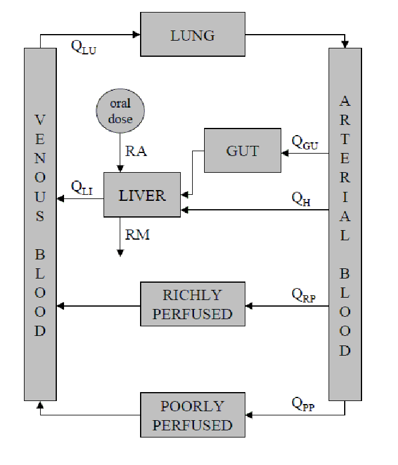
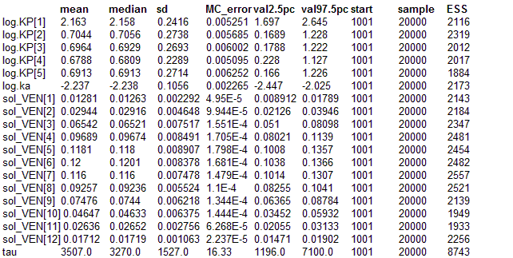
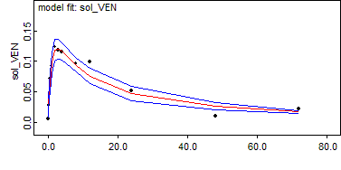

Five compartments: A complex differential equation model
This example makes use of a physiologically based pharmacokinetic (PBPK) model for a hepatically cleared drug given orally to some hypothetical animal. The purpose of this model is to demonstrate the OpenBUGS Differential Equation Interface – all of the physiological parameter values specified are arbitrary. The model is depicted in the figure below.
Physiologically based pharmacokinetic model for a hypothetical, orally administered, hepatically cleared drug. Note that orally administered drug is generally absorbed across the gut wall into the hepatic portal vein. In order to separate any drug that is being absorbed thus from that which is recirculating into the hepatic portal vein, via the tissues of the gut, we tend
to assume that as far as the model is concerned oral absorption processes input drug directly into the “LIVER” compartment, as shown, rather than the “GUT” compartment.
It can be described mathematically via:
dCPP/
dt= KIPPCART − KOPPCPP
dCRP/
dt= KIRPCART − KORPCRP
dCGU/
dt= KIGUCART − KOGUCGU
dCLI/
dt= (QHCART + KOGUVGUCGU + RA − RM) / VLI − KOLICLI
dCLU/
dt= KILUCV EN − KOLUCLU
dCV EN/
dt= (KOPP VPPCPP + KORP VRPCRP + KOLIVLICLI − KILUVLUCV EN) / VV EN
dCART/
dt= (KOLUVLUCLU − QTOTCART ) / VART
Here C. denotes the concentration of drug within the indicated compartment, KIT = QT /VT and KOT = QT /VTKPT , where QT , VT and KPT denote the rate of blood flow, the volume, and the tissue-to-blood partition coefficient associated with tissue/compartment T, respectively. In addition, QH represents the liver’s arterial blood supply (QH = QLI − QGU; see figure) and QTOT is the total cardiac output, which is equal to QLU as all blood must flow through the lungs to be oxygenated. (Note that for mass balance we must also have that QTOT = QLU = QPP + QRP + QGU + QH.) Also, for this particular example, the rate of absorption is given by RA
= ka F Dose exp(−kat) (first-order absorption) and the rate of metabolism, RM, is given by VmaxCLI /(Km + CLI) (Michaelis-Menten metabolism), where ka, F, Vmax and Km are the first-order absorption rate constant, the fraction of the administered dose that enters the liver, the maximum rate of metabolism, and the concentration of drug in the liver at which exactly half the maximum rate of metabolism occurs, respectively.
In the BUGS language the model ismodel {
solution[1:n.grid, 1:dim] <- ode.solution(init[1:dim], grid[1:n.grid], D(C[1:dim], t),
origin, tol)
D(C[PP], t) <- KI[PP] * C[ART] - KO[PP] * C[PP]
D(C[RP], t) <- KI[RP] * C[ART] - KO[RP] * C[RP]
D(C[GU], t) <- KI[GU] * C[ART] - KO[GU] * C[GU]
D(C[LI], t) <- (QH * C[ART] + KO[GU] * V[GU] * C[GU] + RA - RM) / V[LI] - KO[LI] * C[LI]
D(C[LU], t) <- KI[LU] * C[VEN] - KO[LU] * C[LU]
D(C[VEN], t) <- (KO[PP] * V[PP] * C[PP] + KO[RP] * V[RP] * C[RP] +
KO[LI] * V[LI] * C[LI]
- KI[LU] * V[LU] * C[VEN]) / V[VEN]
D(C[ART], t) <- (KO[LU] * V[LU] * C[LU] - QTOT * C[ART]) / V[ART]
for (T in PP:LU) {
KI[T] <- Q[T] / V[T]
KO[T] <- KI[T] / KP[T]
KP[T] <- exp(log.KP[T])
}
ka <- exp(log.ka)
RA <- ka * frac * dose * exp(-ka * t)
RM <- Vmax * C[LI] / (Km + C[LI])
QH <- Q[LI] - Q[GU]
QTOT <- Q[LU]
# Initial conditions:
init[PP] <- 0 init[RP] <- 0 init[GU] <- 0 init[LI] <- 0 init[LU] <- 0
init[VEN] <- 0 init[ART] <- 0
# Stochastic model:
for (i in 1:n.grid) {
sol_VEN[i] <- solution[i, VEN]
data[i] ~ dnorm(sol_VEN[i], tau)
}
tau ~ dgamma(tau.a, tau.b)
for (T in PP:LU) {
log.KP[T] ~ dnorm(log.KP.mean[T], log.param.prec)
log.KP.mean[T] <- log(data.KP[T])
}
log.ka ~ dnorm(log.ka.mean, log.param.prec)
log.ka.mean <- log(data.ka)
}
Data
list(
PP = 1, RP = 2, GU = 3, LI = 4, LU = 5, VEN = 6, ART = 7,
n.grid = 12,
dim = 7,
origin = 0,
tol = 1.0E-3,
grid = c(0.1, 0.2, 0.5, 1, 2, 3, 4, 8, 12, 24, 48, 72),
data = c(0.005103,0.02779,0.07123,0.09213,0.1235,0.1186,
0.1149,0.09567,0.0983,0.05143,0.009843,0.02112),
Q = c(45, 30, 20, 25, 120),
V = c(100, 5, 5, 5, 1, 5, 3),
data.KP = c(10, 2, 2, 2, 2),
dose = 100,
frac = 1,
data.ka = 0.1,
Vmax = 10, Km = 10,
n.par = 22,
tau.a = 0.001,
tau.b = 0.001,
log.param.prec = 13.81
)
Inits for chain 1
list(tau = 10000)
Inits for chain 2
list(tau = 1)
Results using adaptive block updating with delayed rejection

